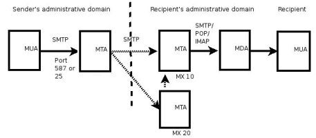
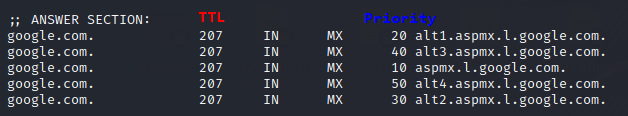

Locate Mail Transfer Agent(MTA)
Locate target's MTAs using DNS (MX records) When a user sends an email, the Message transfer agent (MTA) from the sender side send a DNS query for MX records of the domain.
The response in the MX record contain one or more Message transfer agents (MTA) of the receiving side responsible for the domain.
The MTAs in a MX records have a priority. A connection will first be made to the MTA with the lowest number of
priority. If this fails, the next server will be tried.
Email should be handled by more than one server(like the example above), because in the event that a system is unavailable, emails will not be delivered to the target company.
A single mail server introduces a single point of failure. It could become a target for an attacker that want perform a denial-of-service(DOS) attack
Alternatively a domain configured can use a round-robin DNS: single MX record(single server) but multiple A records.
dig -t MX hotmail.it +short
dig -t A eur.olc.protection.outlook.com +short